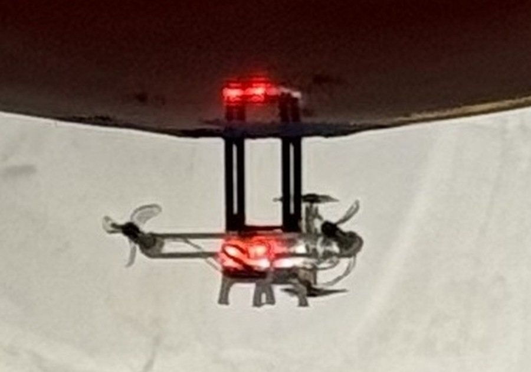
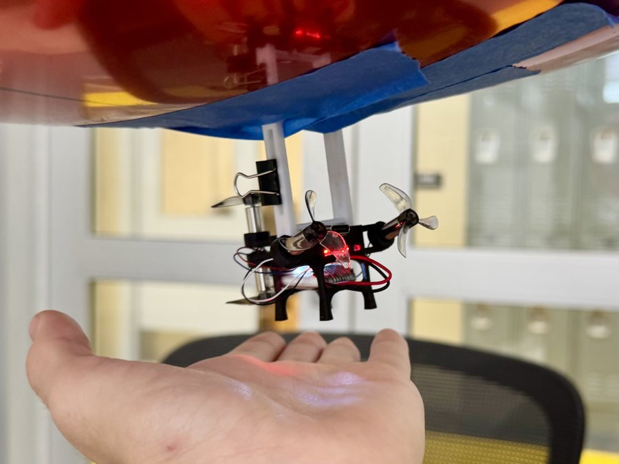
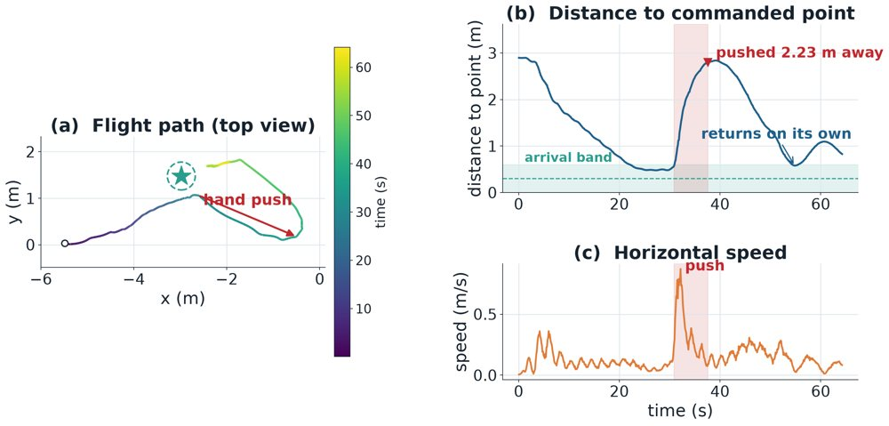
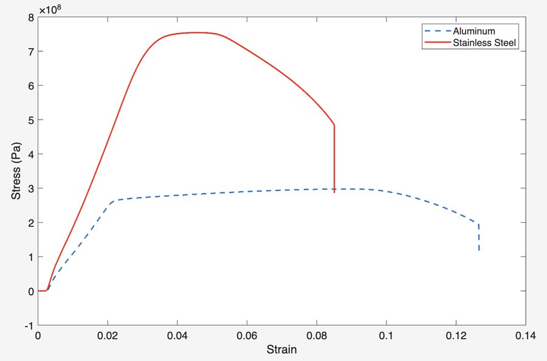

Benjamin Greenberg
I'm a sophomore at Swarthmore College, working toward a B.S. in Engineering and a B.A. in Economics. Most of what I build is small hardware: 3D-printed frames, PCBs, and the C and C++ that run on them.
This past summer I built a 29 g autonomous blimp in David Saldaña's Aerial Swarms Lab at Lehigh. During the term I work on a haptic robot for stroke rehabilitation research at Swarthmore, study vaccination tipping points with Hsuan-Wei Lee at Lehigh, and run the robotics club, where we're building an F1TENTH race car.
Looking for Summer 2027 internships in hardware, embedded systems, or robotics.

Publications

HINT-Blimp: Human INTent Inference from Multimodal Cues for Robotic Blimps
Under review, 2026. Spotlight talk at the IROS 2026 NoC workshop.

Tipping Points in Vaccination Systems: Bistability, Irreversibility and Early-Warning Signals
In revision for resubmission, 2026.
Research



Left to right: the blimp in Lehigh's flight arena, its 29 g gondola, the haptic finger attachment.
Aerial Robotics Researcher
Aerial Swarms Lab, Lehigh University
- Built an autonomous blimp for rehabilitation applications, from the airframe through the flight software.
- Designed and printed a frame around an ESP32 and IMU at 29 g total, over more than ten builds.
- Wrote a pure-pursuit and PD controller in C. Post-push position error fell from 1.27 m to 0.42 m, and the blimp got back within 1.5 m of target in 95% of motion-capture trials (median recovery 13.2 s).
- Second author on HINT-Blimp.
Haptic Robotics Research Assistant
Neuromuscular hand control lab, Swarthmore College
- Setting up a PHANToM Premium haptic device for post-stroke rehabilitation research.
- Designed and printed an attachment so patients interact with individual fingers instead of gripping with the whole hand.
- Wrote C++ force-feedback and position-tracking code on the OpenHaptics SDK to cover what it doesn't do natively.
- Designing a testing protocol to see whether post-stroke patients have a mix of sensorimotor deficits or one dominant type.
Computational Network Dynamics Researcher
Lehigh University, with Hsuan-Wei Lee
- Built and ran an agent-based epidemic model (4,000 agents, 50 replicates) on my own.
- Found that small dips in vaccination coverage can tip herd immunity into a collapse that is hard to undo.
- First author on the manuscript, which we are revising for resubmission.
Projects
Mostly built outside class, alone or with a small team. Hover a picture for a second view; click to enlarge.


Autonomous blimp
Aerial Swarms Lab, Lehigh · 2026
Lift sets the budget for everything: each gram of frame is a gram less battery or sensing. I drew the airframe around an ESP32 flight board and IMU, wrote the control firmware in C, and flew it over an ESP-NOW radio link under OptiTrack motion capture. Push it a couple of meters off its target and it flies itself back.
- 29 g all-up
- 10+ frame builds
- 1.27 → 0.42 m post-push error
- 95% back within 1.5 m


Cantilever truss
ENGR 006, Swarthmore · April 2026
Scored on weight and deflection under a 1,000 lb point load, with a 30 in minimum span and 18 in height limit. I sized the 14 members: square tube in compression, flat bar in tension. We passed on the lightest simulated geometry because its angles were tighter than we could assemble accurately.
It held the load but deflected 0.390 in, against 0.121 in predicted. My write-up traced the gap to assembly: offset versus inline joints had been chosen by eye, and the small out-of-plane errors added up.
- 6.45 lb truss
- 1,000 lb load held

Tensile testing and material choice
ENGR 006, Swarthmore · May 2026
Pulled Aluminum 6061 and C1018 steel specimens on an Instron to choose a material for the department's truss program, and wrote the MATLAB that turned raw force and displacement into stress-strain curves. Steel was about 2.5 times stronger. I still recommended aluminum: per unit volume it was cheaper, easier to machine, and light enough for students to handle safely.
- UTS 297.8 vs 754.5 MPa
Nine-key macropad
Personal project · May 2026
Schematic and PCB in KiCad, hand-soldered, with custom QMK firmware and a printed case. Two keys were dead on first power-up; probing with a multimeter found a cold joint. Start to finish in a week.
Finger attachment for a haptic device
Hand control lab, Swarthmore · 2025 – now
The stock stylus forces a whole-hand grip, which made the finger-by-finger strength measurements the study needs impossible. I designed an attachment for one- or two-finger use, sized for post-stroke hands and grip strength, and wrote the C++ for force feedback and position tracking. The lab's patient protocol is now built around it.

SEPTA departure board
Personal project · May 2026 – now
A 16-panel HUB75 LED board on a Raspberry Pi 5 (5 V, 100 A), inherited as a rough senior design prototype. I rewrote the Python display layer to show live train positions from SEPTA's TrainView GPS feed, and I'm redesigning the enclosure for outdoor mounting ahead of a station install with SEPTA.

F1TENTH race car
Swarthmore Robotics Club · 2026 – now
A 1/10-scale autonomous car. As club president I split perception, planning and control across the team and integrated LiDAR SLAM with the ROS navigation stack. The club went from no autonomy platform at all to SLAM and navigation running on the car.
Smaller things
- chit: split a restaurant bill from a photo of the receipt, in the phone browser.
- freesolv-ml: predicting hydration free energies from SMILES (Stevens research project).
Skills
- Bench
- Soldering, continuity testing, FDM printing, tensile testing, Raspberry Pi, ESP32, motion capture
- Code
- C, C++, Python, MATLAB, ROS
- CAD / EDA
- KiCad, SolidWorks, Fusion
- Courses
- Circuit Analysis, Differential Equations, Engineering Mechanics, Electricity and Magnetism, Multivariable Calculus; Engineering Dynamics (fall 2026); Linear Systems Analysis (spring 2027)
- Languages
- English, French
Education and leadership
Swarthmore College
B.S. Engineering, B.A. Economics. GPA 3.93. Sigma Xi.
President, Swarthmore Robotics Club
Campus tour guide, Swarthmore Admissions
Founder, video and graphic design business
Minecraft art channel, now 55,000+ YouTube subscribers and 86,000+ TikTok followers.
Club squash (captain), Ceramics Club (founder), Chabad executive board.
News
| Oct 2026 | HINT-Blimp given as a spotlight talk at the IROS 2026 workshop on nonverbal cues in Pittsburgh. |
| Sep 2026 | HINT-Blimp is on arXiv. |
| Aug 2026 | Finished the summer at Lehigh. The blimp gets back within 1.5 m of target in 95% of push trials. |
| May 2026 | Started in the Aerial Swarms Lab at Lehigh. |
| Apr 2026 | Our 6.45 lb truss held 1,000 lb. |
| Feb 2026 | Took over as president of the Swarthmore Robotics Club. |
| Oct 2025 | Joined the hand control lab at Swarthmore. |
| Jun 2025 | Started the vaccination modeling project with Hsuan-Wei Lee at Lehigh. |